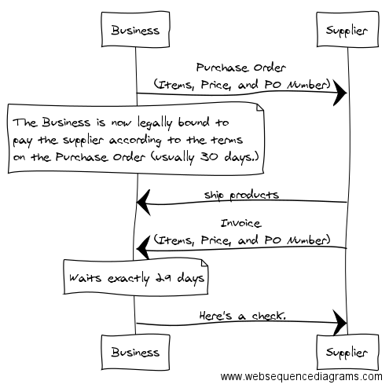

Create sequence diagrams online
Example from A Smart Bear: How to sell to large companies

That's nice, but check out the PlantUML extension to @code Similar syntax but supports more and no service dependency.
I've installed PlantUML. The docs for it are here:
https://marketplace.visualstudio.com/items?itemName=jebbs.plantuml
I created this file:
@startuml
Alice -> Bob: Authentication Request
Bob --> Alice: Authentication Response
Alice -> Bob: Another authentication Request
Alice <-- Bob: another authentication Response
@enduml
And then used Alt-D to preview the current file. (This relied on having restarted VS Code after installing the PlantUML extension.
Looks like you can style the diagrams with a wsd file (which stands for 'websequencediagram':
@startuml
!include ../includes/defines.wsd
!include ../includes/myStyles.wsd
'contents goes here...
@enduml
Now, you can just replace them with a placehold 'autoinclude,
@startuml
'autoinclude
'contents goes here...
@enduml
More details about sequence-diagram syntax here: http://plantuml.com/sequence-diagram